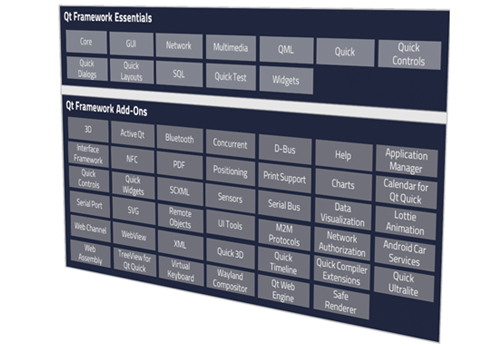
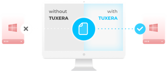
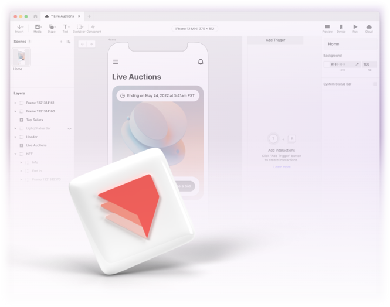

글로벌 SW 라이선스와 국내 엔지니어링을 함께 제공합니다
정품 라이선스 조달부터 제품 선정·
제품 선정부터 통합·운영 지원까지
프로젝트 환경에 맞는 글로벌 솔루션을 선정하고, 정품 라이선스와 국내 기술지원·
Qt — 크로스플랫폼 UI 프레임워크
하나의 코드베이스로 데스크톱·

Telit Cinterion — 셀룰러 IoT 모듈
산업 게이트웨이·

Toradex — 산업용 SoM · 캐리어보드
NXP i.MX 기반 SoM(System on Module)을 활용해 임베디드 제품의 개발·

VisualOn — 멀티미디어 재생 개발도구(SDK)
차량 IVI·

Tuxera — 임베디드 파일시스템
자동차·

ProtoPie — 하이피델리티 프로토타이핑
차량 HMI·

프로젝트 전체 임베디드 스택을 한 팀이 연결합니다
6종 솔루션을 OS·
| 파트너 | 담당 계층 | 핵심 기술 | 표준 · 프로토콜 |
|---|---|---|---|
| Qt | HMI · UI 프레임워크 | Qt Framework(C++) · QML/Qt Quick · Qt Creator · Automotive Suite | C++17 · OpenGL ES/Vulkan · MISRA C++ |
| Toradex | 임베디드 컴퓨팅(SoM) | NXP i.MX SoM · 커스텀 캐리어보드 · Torizon | Yocto 보드 지원 패키지(BSP) · OCI 컨테이너 · 원격 업데이트(OTA) · 차량·산업 통신(CAN/Modbus)/RS-485 |
| Telit Cinterion | 셀룰러 커넥티비티 | LTE Cat M1 · NB-IoT · 5G 모듈 · eSIM | 3GPP Cat M1/NB-IoT · MQTT/LwM2M · TLS |
| VisualOn | 멀티미디어 · 재생 | 멀티미디어 개발도구(SDK) · SW 코덱 · 적응형 재생 · DRM | H.264/HEVC · HLS/MPEG-DASH · Widevine/PlayReady |
| Tuxera | 스토리지 · 파일시스템 | 페일세이프 임베디드 FS · 웨어레벨링 | exFAT/NTFS · POSIX I/O · eMMC/UFS/SD |
| ProtoPie | 사용자 경험(UX) · 인터랙션 검증 | 노코드 프로토타이핑 · 하드웨어/신호 브리지 | 디자인→개발 핸드오프 · 시리얼/소켓/MQTT |
삼성 스마트폰 SW·
주요 산업·임베디드·미디어 표준에 대응합니다
프로젝트에 필요한 표준과 프로토콜을 제품 선정·
차량 전장 프로젝트에서는 ISO 26262(기능안전)·
조달 이후 통합과 기술지원까지 책임집니다
라이선스 공급에 그치지 않고 온보딩·
라이선스 조달
정품 라이선스 공급·
온보딩 · 교육
개발도구(SDK)·
통합 엔지니어링
개발도구(SDK)·
국내 기술지원
국내 기술지원 창구에서 문의를 접수하고 1차 대응
벤더 본사 연계
국내에서 해결하기 어려운 이슈를 본사로 에스컬레이션